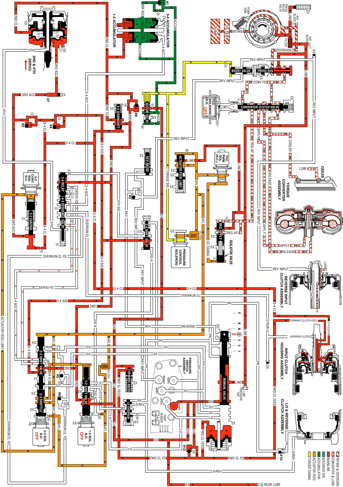

Overdrive Range, Third Gear
Overdrive Range, Third Gear
As vehicle speed increases further and other vehicle operating conditions are appropriate, the PCM de-energizes the normally open 2-3 shift solenoid valve in order to shift the transmission into Third gear.
2-3 Shift Solenoid (SS) Valve
De-energized (turned OFF) by the PCM, the solenoid opens and actuator feed limit signal B fluid exhausts through the solenoid.
Note: AFL fluid continues to feed signal B fluid to the solenoid through orifice #29. However, the exhaust port through the solenoid is larger than orifice #29 to prevent a buildup of pressure in the signal B fluid circuit at the solenoid end of the 2-3 shift valve. Exhausting signal B fluid is represented by the arrows through the solenoid.
2-3 Shift Valve Train
AFL fluid pressure at the 2-3 shift valve moves the valve train toward the solenoid. In the upshifted position, the following changes occur:
^ AFL fluid is routed through the 2-3 shift valve and fills the D432 fluid circuit.
^ 2nd fluid is blocked from entering the servo feed fluid circuit and is orificed (#28) into the 3-4 signal fluid circuit. This orifice helps control the 3-4 clutch apply rate.
^ Servo feed fluid exhausts past the valve into the 3-4 accumulator fluid circuit and through an exhaust port at the 3-4 relay valve.
3-4 Clutch Exhaust Checkball (#4)
3-4 signal fluid unseats the ball and enters the 3-4 clutch fluid circuit.
3-4 Clutch Piston
3-4 clutch fluid pressure moves the piston to apply the 3-4 clutch plates and obtain 3rd gear. However, the 2-4 band must release as the 3-4 clutch applies.
3rd Accumulator Checkball (#2)
3-4 clutch fluid pressure unseats the ball and fills the 3rd accumulator fluid circuit.
3rd Accumulator Exhaust Checkball (#7)
3rd accumulator fluid seats the ball against the orificed exhaust and is routed to the released side of the 2nd apply piston. Before the #7 checkball seats, air in the 3rd accumulator fluid circuit is exhausted through the orifice.
2-4 Servo Assembly
3rd accumulator fluid pressure acts on the release side of the 2nd apply piston and assists servo return spring force. The surface area on the release side of the piston is greater than the surface area on the apply side. Therefore, 3rd accumulator fluid pressure and servo return spring force move the 2nd apply piston against 2nd clutch fluid pressure. This action serves two functions:
^ Move the apply pin to release the 2-4 band.
^ Act as an accumulator by absorbing initial 3-4 clutch fluid to cushion the 3-4 clutch apply rate. Remember that the 3rd accumulator fluid circuit is fed by 3-4 clutch fluid.
3-2 Downshift Valve
3-4 clutch fluid pressure moves the valve against spring force. This opens the valve and allows 2nd fluid to feed the 2nd clutch fluid circuit through the valve.
3-2 Control Solenoid Valve and 3-2 Control Valve
The solenoid remains open and routes AFL fluid into the 3-2 signal fluid circuit. 3-2 signal fluid pressure holds the 3-2 control valve against spring force, thereby blocking the 3rd accumulator and 3-4 clutch fluid circuits.
1-2 Shift Solenoid (SS) Valve and 1-2 Shift Valve
The 1-2 SS valve remains de-energized and signal A fluid is exhausted through the solenoid. Also, D432 fluid pressure from the 2-3 shift valve assists spring force to hold the 1-2 shift valve in the upshifted position.
3-4 Shift Valve
Spring force holds the valve in the downshifted position, blocking 3-4 clutch fluid in preparation for a 3-4 upshift.
Torque Converter Clutch
TCC Solenoid Valve
Under normal operating conditions, in Overdrive Range-Third Gear, the PCM keeps the normally open TCC solenoid valve de-energized. Converter feed fluid exhausts through the open solenoid, and spring force keeps the converter clutch apply valve in the release position. However, at speeds above approximately 121 km/h (75 mph), with the transmission still in third gear, the PCM will command TCC apply in third gear. Refer to Overdrive Range, Fourth Gear - Torque Converter Clutch Applied for more information on TCC apply.
Overdrive Range, Third Gear
Overdrive Range, Third Gear:
